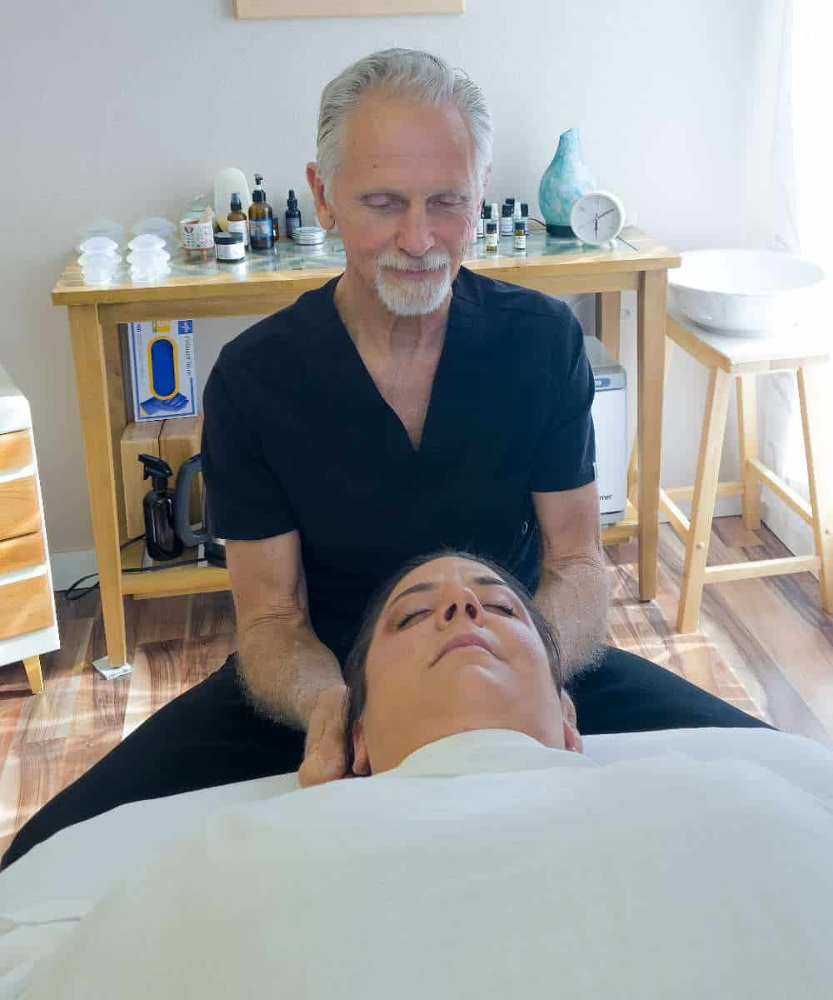
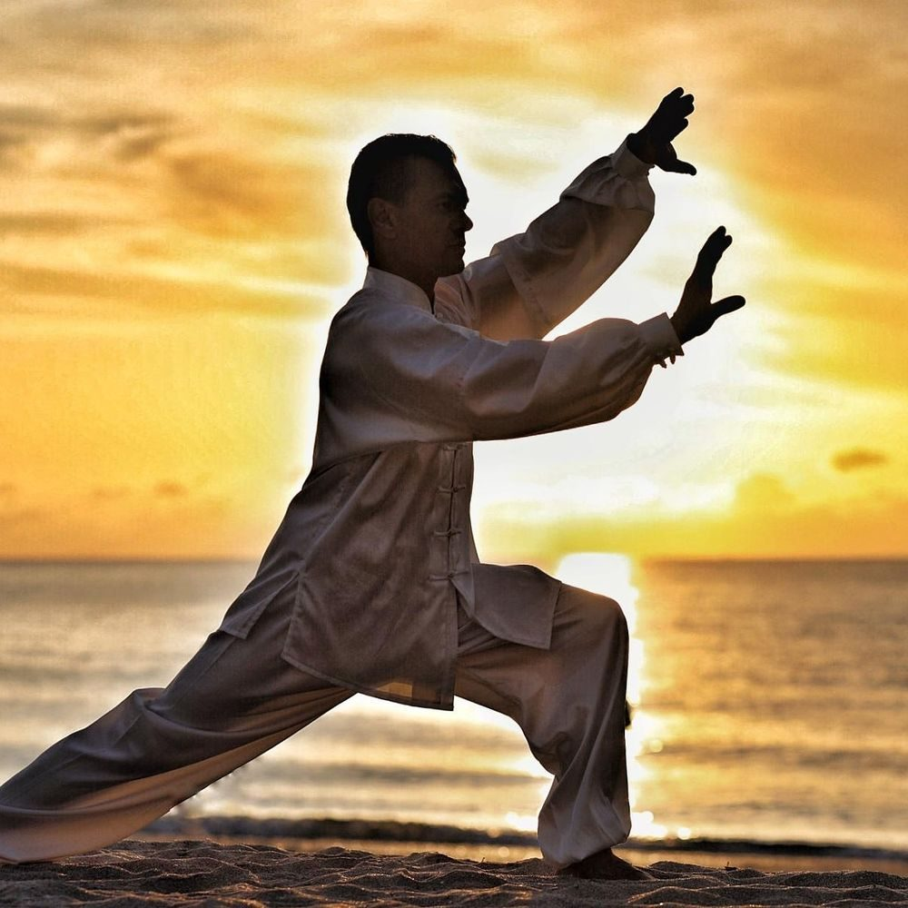
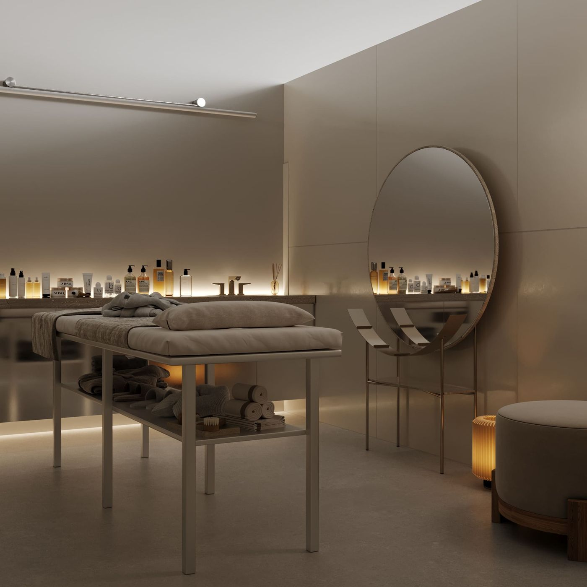

Therapeutic bodywork · Gardens, Cape Town
Healing that begins with listening.
Dr Peter Garner Jones weaves therapeutic massage, CranioSacral therapy, energy work and gentle alignment into a single, unhurried session — shaped around what your body actually needs, not a fixed routine.
- Two decades
- in clinical practice
- Four traditions
- one integrated approach
- Every session
- tailored to the person

Meet Dr Peter Garner Jones
A multidisciplinary healer with a steady hand.
For more than twenty years, Peter has practised the slow, careful art of helping bodies let go. His room on Kloof Street is deliberately quiet — no loud music, no rushed turnarounds between clients — because the nervous system does its best work when nothing is asking it to hurry.
Trained across several disciplines, he resists the idea that any single technique suits every body. Some sessions call for firm, structural massage work. Others ask for the feather-light stillness of CranioSacral therapy, the subtle rebalancing of energy work, or a precise, chiropractic-style mobilisation. Most often, a session draws quietly on all of these.
What stays constant is the method: listen first, work with the body rather than on it, and send you home with something you can use — a breath, a stretch, a way of standing — so the session keeps working long after you have left the room.
- Doctorate-level training in therapeutic bodywork
- Certified CranioSacral Therapy practitioner
- Advanced certification in therapeutic & deep-tissue massage
- Long-standing personal practice in Chigong and Tai Chi
- Twenty-plus years serving the Gardens & City Bowl community
The approach
One session, many languages.
The body rarely speaks in a single dialect. Peter's work moves between four registers, letting the session find its own depth as the body permits.
-
01
Listen
Every session opens with a short conversation and a quiet, hands-on assessment — where you are carrying tension, how you breathe, how you hold your day. No treatment begins before the body has been heard.
-
02
Release
Firm, flowing massage — deep-tissue, myofascial and classical technique, blended as needed — to soften the layers the day has knotted together. Always within your comfort; deep does not mean punishing.
-
03
Rebalance
CranioSacral holds and energy work settle the nervous system — the place where old patterns actually live. Clients often describe this part as "the quietest hour I've had in years."
-
04
Integrate
Gentle, chiropractic-informed alignment where the body invites it, then a short, personal take-home practice — a breath, a stance, a stretch — so the calm has somewhere to live until the next visit.
Sessions & fees
Choose a starting point.
Not sure which you need? Most first visits begin as integrative bodywork — Peter will advise after a short conversation, and the session follows the body.
Integrative Therapeutic Massage
Firm, flowing work blended from deep-tissue, Swedish and myofascial technique — the depth your tissue asks for, and not a kilogram more.
R700 / R950
CranioSacral Therapy
Feather-light holds at the head, spine and sacrum that invite the nervous system to release tension it has been guarding for years. Fully clothed.
R600
Energy Work & Alignment
Subtle energy balancing combined with gentle, chiropractic-informed mobilisation — for when the body needs order rather than pressure.
R700
Movement & Breath Coaching
A short personal practice drawn from Chigong, Tai Chi or breathwork — simple enough to do at home, honest enough to actually keep doing.
R450
Medical-aid-ready invoices are available on request. Concession rates are kept aside for pensioners and students — simply ask.
Learn · The energy library
Energy is a skill, not a mystery.
The Chinese movement arts have trained breath, posture and attention for centuries. Peter teaches simple elements of them in session — so the calm you leave with is something you can rebuild at home, any day, for free.

Chigong (also written Qigong) translates literally as “energy work”. It pairs slow movement with long breaths and a rested, travelling attention — a way of noticing where your energy pools, runs dry or jams, and of smoothing it out again.
Where massage treats the tissue, Chigong trains the current. Practised a few minutes a day, it keeps the nervous system from re-tightening between sessions, which is why Peter often ends a treatment by teaching one small form.
Try this tonight
- Stand with feet hip-width apart, knees soft, shoulders heavy.
- Inhale through the nose for a slow count of four; feel the belly widen first.
- Exhale for six, arms floating down like they're moving through warm water. Repeat nine times.
Tai Chi began as a martial art and survives as a moving meditation: one continuous, weight-shifting line from the foot through the spine to the hand. The slowness is the point — it exposes every place you brace, rush or hold.
For clients, Tai Chi is balance training in the widest sense: physical steadiness, steadier mood, steadier energy across the day. Ten unhurried minutes outperforms an aggressive hour you never return to.
Try this tonight
- Shift all your weight slowly onto one leg; let the other foot hover a breath.
- Set it down a hand-width ahead, heel first, and shift forward like pouring water.
- Six steps out, six steps back. The only goal is not to spill.
Breathwork is the fastest lever you own over the nervous system. A longer exhale tells the vagus nerve that the emergency is over — blood pressure settles, the jaw unclenches, sleep arrives earlier.
Peter uses breath as the bridge between table and daily life: it is the one technique that travels everywhere, needs no equipment, and works in traffic, in meetings and at 2 a.m. in equal measure.
Try this tonight
- Lie down, one hand on the chest, one on the belly.
- Breathe so only the lower hand moves, in through the nose for four.
- Exhale through pursed lips for six. Ten rounds, then stop noticing.
In clients' words
Quiet work, lasting results.
“I arrived wound tight as a spring and left feeling like I'd been away for a week. It isn't a routine — he just seems to find exactly where things live.”
— Thandi M., Oranjezicht
“The cranio work settled headaches I'd carried for years. I still do the breathing he taught me, most nights.”
— David K., City Bowl
Before you visit
Honest answers.
What happens in a first session?
We start with ten unhurried minutes on your history, your sleep and what brought you in. Peter then assesses posture and breathing by hand before any treatment begins. Work follows the body's permission — you stay draped at all times and nothing happens without explanation first. You leave with one simple practice to hold the result.
Do I need to undress?
Only for the massage portions, and only to the degree you're comfortable with — you'll always be professionally draped and warm. CranioSacral therapy and energy work are done fully clothed, and many clients choose sessions that never require undressing at all.
What does CranioSacral therapy actually feel like?
Subtle. The holds are lighter than a coin resting on skin, yet most people feel deep change — warmth, softening, a drifting, almost dreamlike state. It is less about force and more about giving the nervous system a still point where it can finally let go of what it's been holding.
How many sessions will I need?
Recent strain often resolves in one to three visits; long-held patterns usually respond best to a short series spaced a week or two apart, then maintenance as needed. You'll get an honest estimate at the end of the first session — and no packages are ever pushed.
Can I claim from my medical aid?
Invoices with the practice details needed for reimbursement are available on request. Cover varies by plan, so it's worth checking your scheme's rules for complementary therapy beforehand — the front desk will give you everything you need for the claim.
Visit
The room on Kloof Street.
A quiet first-floor room in the heart of Gardens — high windows, morning light, and the noise of Kloof Street left politely downstairs.
99 Kloof Street, GardensCape Town, 8001
| Monday – Friday | 08:00 – 18:00 |
|---|---|
| Saturday | 08:00 – 13:00 |
| Sundays & public holidays | Closed |
Street parking is available along Kloof Street; on Saturdays, arrive a few minutes early. Reach the practice on +27 (0)82 555 0123 or hello@petergarnerjones.co.za.
